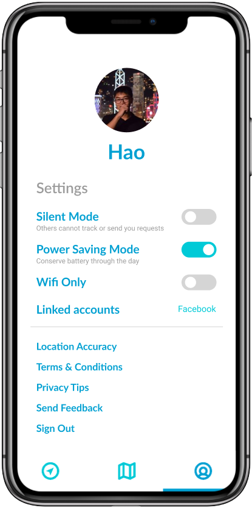
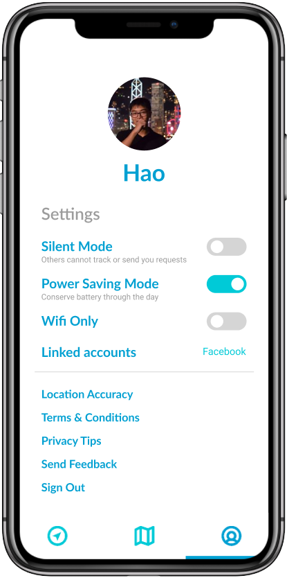

Ideation
Compass
An arrow is probably the most simple and intuitive tool to guide someone from point A to point B, especially in places where traditional maps are of little use. Similar to a magnetic compass, the Glimmer compass would act as an arrow that always points towards the location of a friend and adjusts itself based on the direction you are facing and the orientation of your device. The distance counter would display the net distance between the user and their friend.
Map
A mapping interface is always essential despite that it can be confusing for some in certain situations. Glimmer’s complementary map allows users to see their current location as well as the real-time location of friends. A map will also enhance the guiding properties of the compass and guide users in unfamiliar places.
Social
The ability to access and track with friends should be easily accessible. Users like Jeremy and Sydney should be able to connect with their friends as soon as they realize they are not together.
Wireframes and Flow
Because there is already frustration in locating and rendezvousing with others, users should not also have to struggle with using the app. That is why Glimmer requires the most simple and easy-to-use user interface.


.webp)
 
